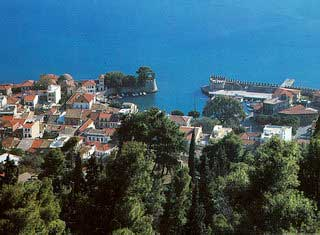

Οχυρώσεις στην πόλη της Ναυπάκτου
 «Ναυς» (πλοίο) και «πήγνυμι» (κατασκευάζω) είναι οι αρχαιοελληνικές λέξεις που συνθέτουν το όνομα της Ναυπάκτου, υπενθυμίζοντας την κατασκευή των πλοίων με τα οποία οι Δωριείς κατέλαβαν την Πελοπόννησο (1104 π.Χ.). Το εντυπωσιακό φρούριο στην κορυφή του υψώματος πίσω από την πόλη της σημερινής Ναυπάκτου ( άλλοτε «Λεπάντο»), καθώς και το γραφικό κάστρο του λιμανιού αποτελούν έργα των οχυρωματικών επεμβάσεων των Ενετών. Οι οχυρώσεις, αποδείχθηκαν ιδιαίτερα ισχυρές, αφού ποτέ η πόλη δεν καταλήφθηκε με έφοδο. Σε ορισμένα σημεία των τειχών που ξεκινούσαν από το λόφο και έφταναν ως την παραλία διακρίνονται ίχνη από κυκλώπεια τείχη. Υπόγειο μυστικό πέρασμα στη δυτική πλευρά των τειχών οδηγούσε τους αμυνόμενους κρυφά έξω από το κάστρο. | ||